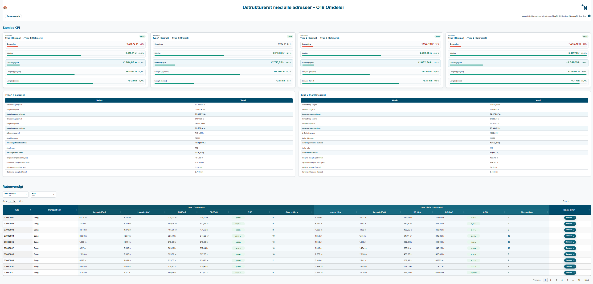
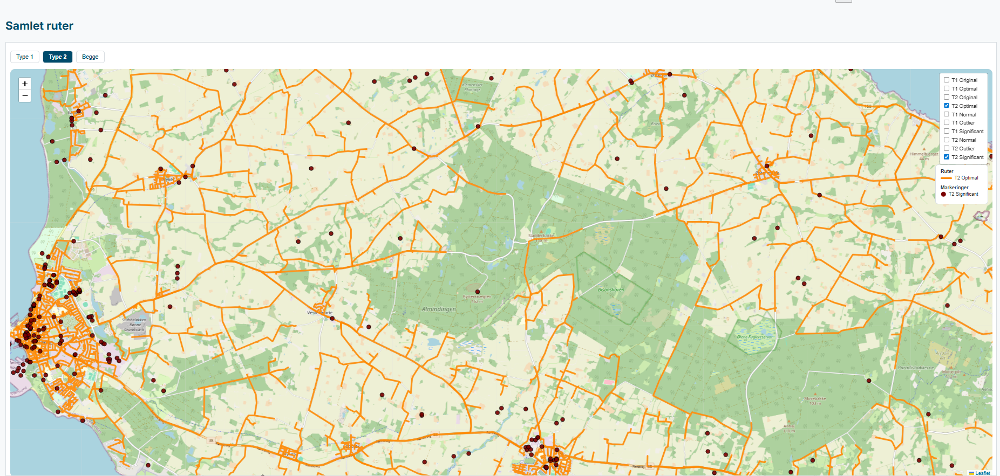

How to use it
- Check the metadata line at the top.
- Read the change cards first.
- Use the KPI cards to confirm the direction.
- Move to the route overview to find the drivers.
This page shows one selected scenario in route detail.
These are the main terms used here.

